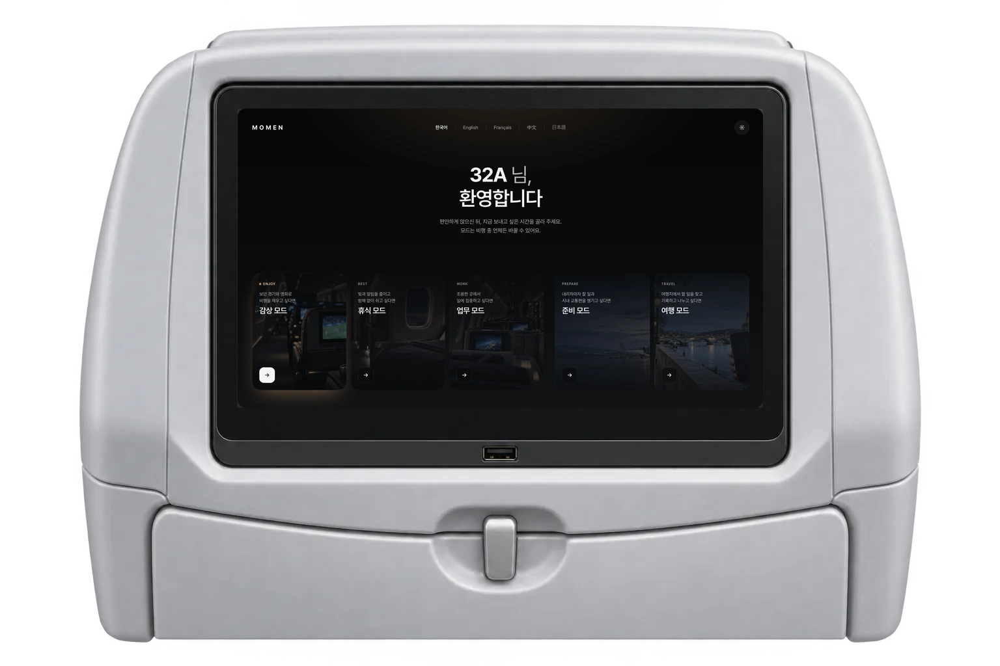
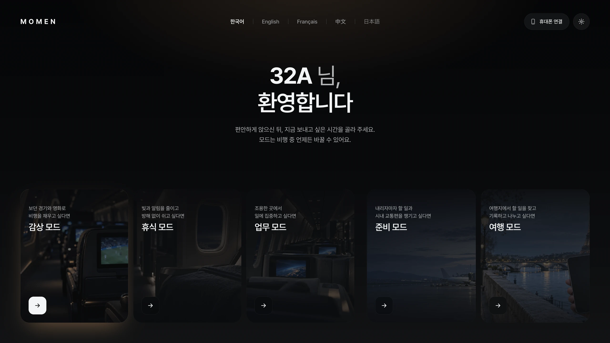
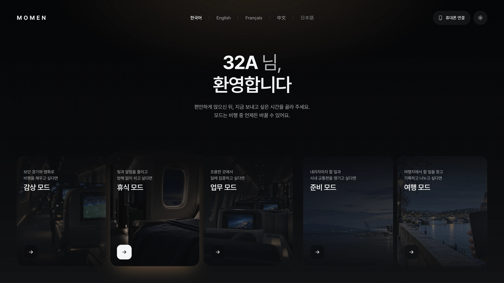
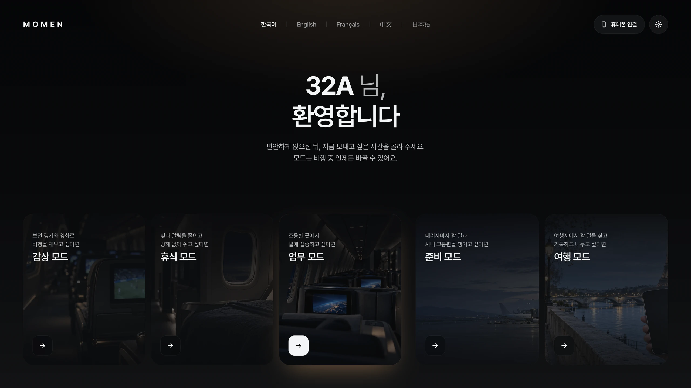
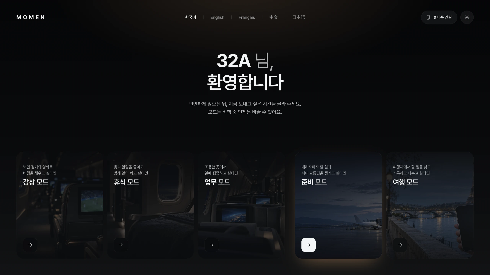
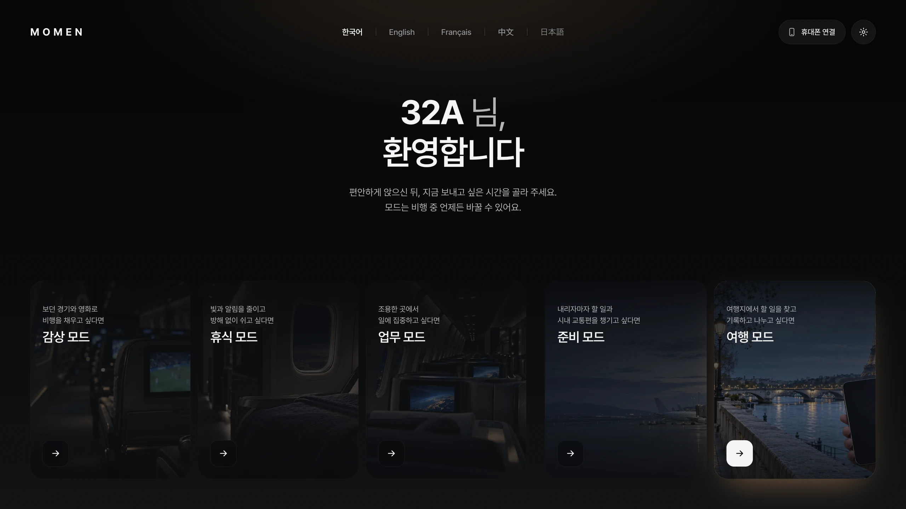
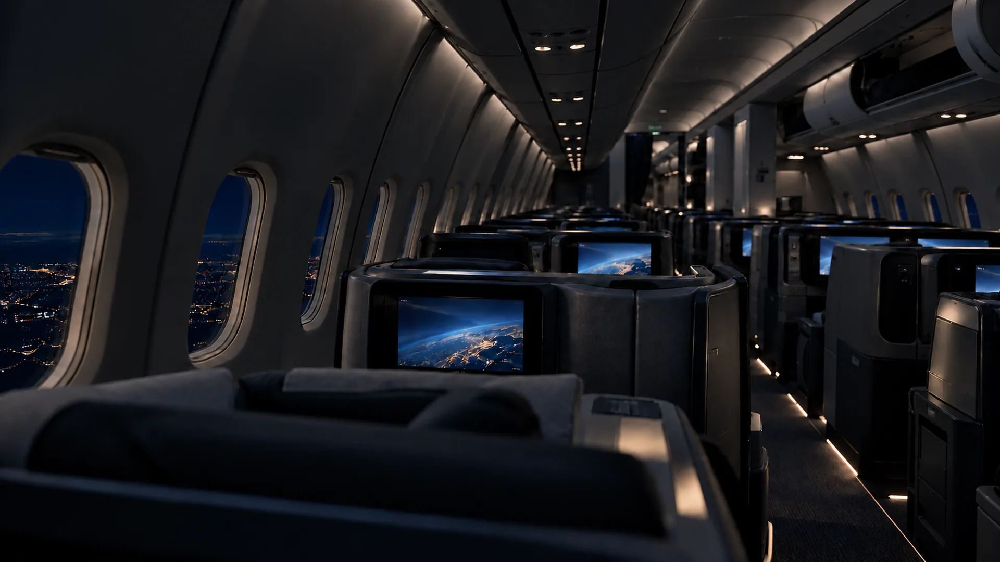
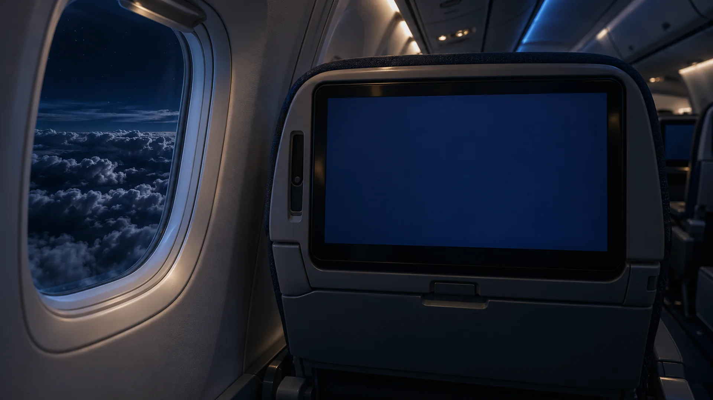

앉는 순간 이어지는 시간
좌석에 앉으면 내 좌석 번호와 탑승 전 휴대폰에서 보던 콘텐츠가 먼저 기다리고 있어요.
Shall we take off?
이동의 시간을 나만의 시간으로
콘텐츠 목록 대신, 지금 원하는 상태에서 시작하는 화면





보던 경기와 영화로 비행을 채우는
감상 모드
빛과 알림을 줄이고 깊이 잠드는
휴식 모드

흐름을 지키며 일에 몰입하는
업무 모드

메뉴의 모드에서 언제든 바꿀 수 있어요. 감상·휴식·업무·준비·여행 중 지금 상태를 고르면 화면 구성과 조명, 알림이 그 모드에 맞게 함께 바뀝니다.
예약할 때 쓰던 스트리밍 계정을 연결해 두면, 휴대폰에서 멈춘 장면이 좌석 화면에서 같은 위치부터 시작됩니다. 착륙 후에는 좌석에서 본 지점이 다시 휴대폰으로 넘어가요.
휴식 모드에서는 직접 고른 순간만 깨워요. 아침 식사나 착륙 50분 전처럼 꼭 필요한 알림만 받고, 나머지는 모아 두었다가 깨어난 뒤 한 번에 보여 줍니다.
도착 체크리스트, 시내 이동 경로, 담아 둔 장소가 QR 한 번으로 휴대폰에 옮겨져요. 공항에서 데이터가 없어도 열어 볼 수 있도록 미리 저장됩니다.
기내에서 준비한 정보와 함께 내딛는 여행지의 첫걸음
비행기에서 내리자마자 필요한 것만 남겨요. 입국심사, 수하물, 시내로 가는 교통편까지 공항에서 할 일을 순서대로 안내합니다.
여행지에서 할 일을 찾고, 기록하고, 나눠요. 지금 위치와 시간에 맞는 장소를 일정에 담고 다녀온 순간을 함께한 사람과 공유합니다.